VoceMündliche Prüfungen · Gymnasium Bayern · Anleitung
Voce begleitet große mündliche Leistungsnachweise in den modernen Fremdsprachen von der Klassenliste bis zum fertigen Bewertungsbogen: Gruppen und Zeitplan, Prüfungskarten, Bewerten nach den ISB-Rastern während der Prüfung, Worturteil, Bewertungsbögen in Word und eine Übersicht für die Fachschaft.
- Klasse anlegenListe als PDF, Excel oder Text einlesen.
- Prüfung anlegenRaster und Notenschlüssel schlägt Voce vor.
- Gruppen & PlanEinteilen, Pausen setzen, Plan drucken.
- BewertenPunkte antippen – Note und Worturteil entstehen mit.
- BögenAlle Bewertungsbögen als Word speichern.
1Überblick: Start, Leiste, Archiv
Beim ersten Start legt Voce eine Beispielprüfung mit erfundenen Namen an und zeigt auf „Start“ eine kurze Begrüßung mit den vier Schritten; Ausblenden blendet sie aus. Die Beispielprüfung löschst du unter Prüfung bearbeiten.
Start zeigt, was als Nächstes ansteht und was bei jeder Prüfung noch fehlt (Gruppen, Aufgaben, Bewertung). Ein Klick führt direkt zum nächsten Schritt.
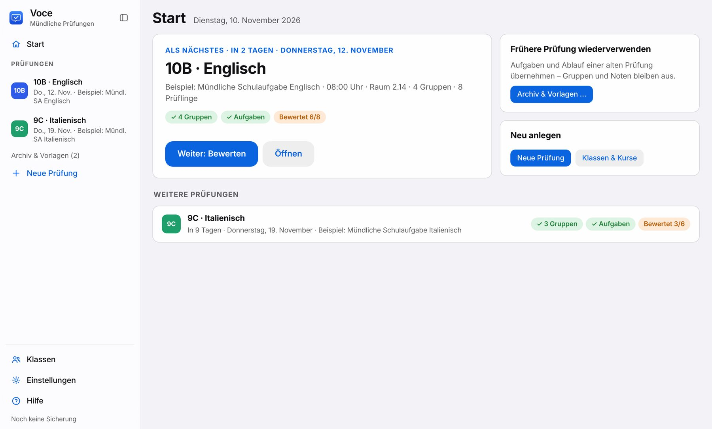
Die Leiste links enthält:
- oben deine Prüfungen nach Datum,
- direkt unter der gewählten Prüfung ihre vier Schritte Gruppen & Plan · Aufgaben · Bewerten · Ergebnisse & Bögen mit ihrem Stand (✓ erledigt, „6/8“ bewertet) und Prüfung bearbeiten,
- unten Klassen, Einstellungen, Hilfe und den Sicherungsstand.
Ein Klick auf eine andere Prüfung klappt deren Schritte auf. Das Symbol oben in der Leiste klappt die Leiste ein. Beim Bewerten klappt sie von selbst ein, damit die Prüflinge nebeneinander Platz haben.
Archiv & Vorlagen
Die Leiste zeigt die kommenden und die Prüfungen der letzten zwei Wochen. Alle älteren findest du unter Archiv & Vorlagen: mit Suche und Filtern nach Jahrgangsstufe, Fach und Schuljahr.
Als Vorlage legt eine neue Prüfung mit den Aufgaben und dem Ablauf der alten an. Gruppen und Noten übernimmt Voce nicht; Klasse und Termin wählst du neu. Prüfungen werden nie automatisch gelöscht.
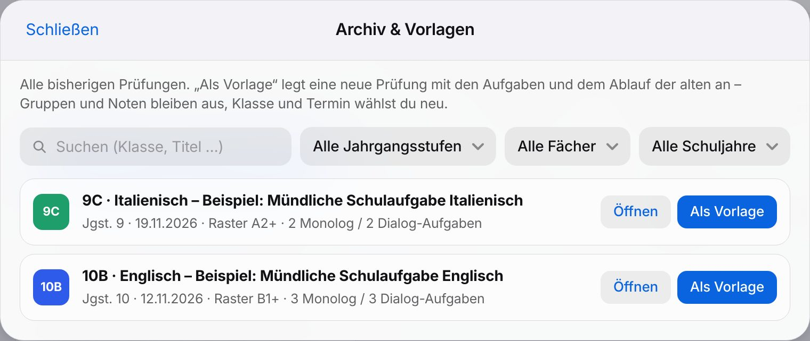
2Klassen
In der Leiste unten Klassen wählen, dann Klasse hinzufügen.
- Liste einlesen: Datei auswählen… oder die Datei in das Feld ziehen. Voce liest PDF (z. B. Klassen- oder Kursliste aus der ASV), Excel und CSV. Namen lassen sich auch über Text einfügen… hineinkopieren.
- Prüfen: Die erkannten Namen erscheinen als Liste; den Klassennamen übernimmt Voce nach Möglichkeit automatisch.
- w/m ergänzen: Fehlt die Angabe (häufig bei Kurslisten der Oberstufe), steht ein orangefarbenes ?. Antippen wechselt w → m → d. Schneller geht es, wenn du ins erste Feld klickst und nacheinander w oder m tippst; der Cursor springt weiter. Mit w/m schreibt das Worturteil „sie/er“, sonst den Vornamen.
- Anpassen: Namen direkt ändern, mit ✕ löschen, über + Gastschüler/in ergänzen. Wer länger fehlt, bekommt „dabei“ ausgeschaltet. Die Person bleibt gespeichert, erscheint aber nicht bei Gruppen und Bewertung.
- Sichern.
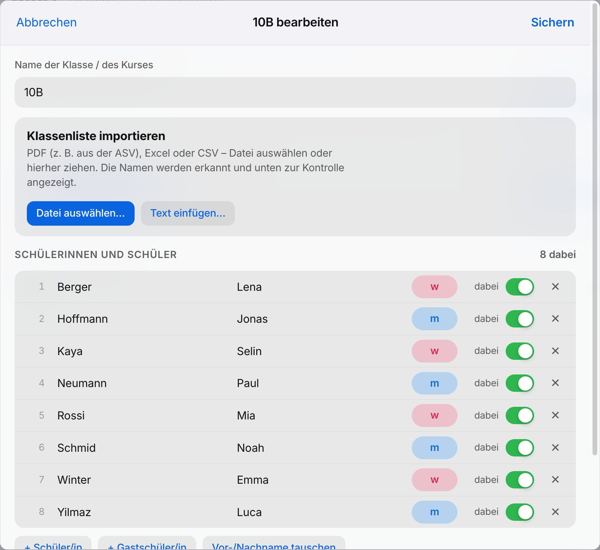
3Prüfung anlegen
+ Neue Prüfung in der Leiste öffnet den Dialog. Diese Felder sind entscheidend:
- Fach, Jahrgangsstufe, Sprachenfolge: Daraus schlägt Voce das passende ISB-Raster vor (z. B. Italienisch als 3. Fremdsprache in Jgst. 9 → A2+). Du kannst den Vorschlag ändern.
- Sprache der Prüfungskarten: In dieser Sprache stehen die Beschriftungen der Karten für die Prüflinge; Voce stellt sie passend zum Fach ein. Die Sprache der Bewertungsbögen wählst du erst bei der Ausgabe (Standard: Deutsch).
- Grenze 4/5: Standard sind 50 % laut ISB; nach fachlichem Ermessen bis 60 %. Der Notenschlüssel steht direkt darunter. Tabelle, Worturteil und Bogen verwenden immer denselben Schlüssel.
- Ablauf: Datum, Beginn, Raum, Minuten je Gruppe, Wechselzeit und Pausenlänge ergeben den Zeitplan. Ein Hinweis für den Plan (z. B. „Bitte 10 Minuten vorher vor dem Raum warten“) erscheint auf dem Ausdruck.
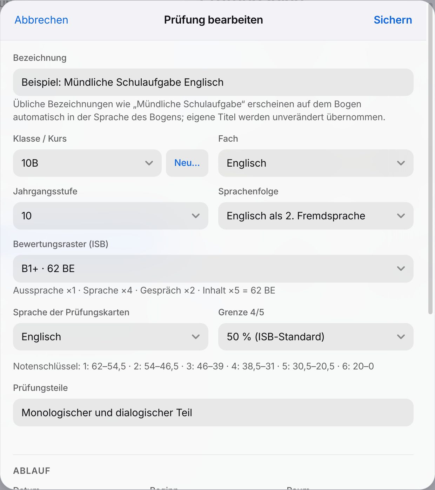
4Gruppen & Prüfungsplan
- Einteilen: Gruppengröße wählen (Einzeln, 2er, 3er, 4er) und Zufällig einteilen. Bleibt jemand übrig, entsteht eine größere Gruppe.
- Wunschgruppen: Namen auf eine andere Gruppe ziehen. Auf einen Namen gezogen, tauschen beide die Plätze. Alternativ einen Namen antippen und dann die Zielgruppe.
- Reihenfolge: Gruppen am Griff ⠿ ziehen oder mit ↑ ↓ verschieben. Ein blauer Strich zeigt, wo die Gruppe landet.
- Pausen: Zwischen zwei Gruppen steht + Pause einfügen. Die Pause erscheint als orange Leiste mit Uhrzeit. Die Länge änderst du mit − und + (5-Minuten-Schritte) oder per Klick auf die Zahl und Eintippen. Auch Pausen lassen sich ziehen; Entfernen nimmt sie heraus.
- Plan drucken … öffnet die Druckvorschau (siehe Drucken und Designs). Als Word liefert den Plan zum Weiterbearbeiten.
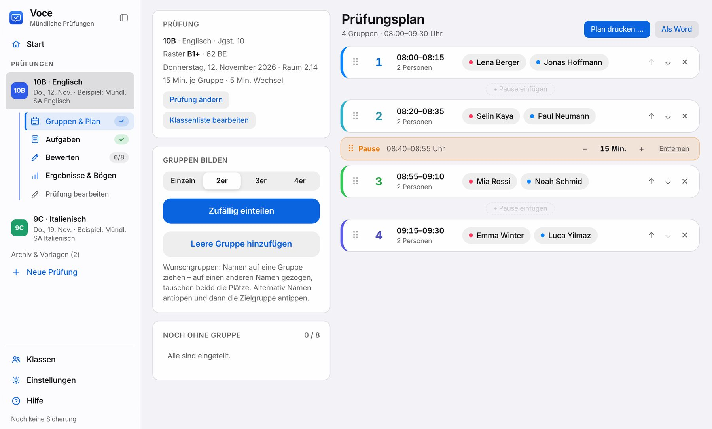
5Aufgaben & Prüfungskarten
Dieser Schritt ist freiwillig. Im Bereich Aufgaben entstehen die Karten für die Prüflinge: je Prüfling eine Karte (A, B, C, D) mit Monolog und Dialog, dazu ein Prüferblatt je Gruppe.
- Aufbau: Monolog und/oder Dialog einschalten, Dauer festlegen, Hinweis „Wörterbuch nicht erlaubt“ wählen und bestimmen, ob die Prüflinge zwischen bis zu vier Monolog-Themen wählen.
- Aufgaben anlegen: Mit + Aufgabe entstehen die Monolog- und Dialogaufgaben. Zeilen mit „- “ werden zu Aufzählungspunkten. Beim Monolog kannst du ein Bild einfügen (Knopf oder auf die Bildfläche ziehen), beim Dialog Situation und Rollenkarten. Erwartungen erscheinen nur auf dem Prüferblatt.
- Verteilen: Aufgaben automatisch verteilen teilt sie reihum auf. Unter „Zuordnung“ lässt sich jede Wahl ändern.
- Drucken: Karten für die Prüflinge … und Prüferblätter … öffnen die Druckvorschau. Die Karten erscheinen in der Sprache der Prüfung, das Prüferblatt auf Deutsch.
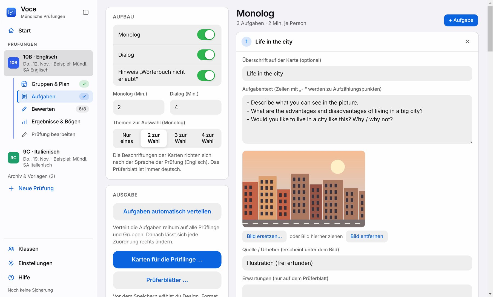
6Bewerten
Links steht die Gruppenliste mit Status, rechts die aktuelle Gruppe mit allen Prüflingen nebeneinander. Am Prüfungstag öffnet Voce die Gruppe, die laut Plan gerade dran ist, und zeigt „Jetzt: Gruppe 2 – noch 8 Min.“ sowie die nächste Gruppe.
- Punkte antippen: je Bereich 0–6 BE (Inhalt 0–4 BE), +½ ergänzt einen halben Punkt. In der Oberstufe vergibst du Notenpunkte 0–15. Falsch angetippt? Noch einmal auf die gewählte Zahl tippen, dann sind die Punkte wieder leer.
- ISB-Beschreibung: Unter den Punkten steht die Beschreibung der gewählten Stufe, zur Kontrolle der Einstufung. Beschreibungen ausblenden schaltet sie für die ganze Gruppe aus.
- Notizen: Je Bereich gibt es ein Notizfeld. Notizen erscheinen auf dem Bogen als eigener Punkt beim jeweiligen Bereich, nicht im Worturteil.
- Aussprache markieren … öffnet typische Laute und häufige Fehler (Englisch, Italienisch, Französisch, Spanisch). Die Auswahl übernimmt Voce beim Schließen in die Notiz, in der Sprache des Bogens.
- fehlt markiert, wer nicht teilgenommen hat. Für diese Prüflinge legt Voce später auf Wunsch einen Nachtermin an.
- Timer oben mit Start/Pause. Vorherige / Nächste oder die Pfeiltasten ← → wechseln die Gruppe.
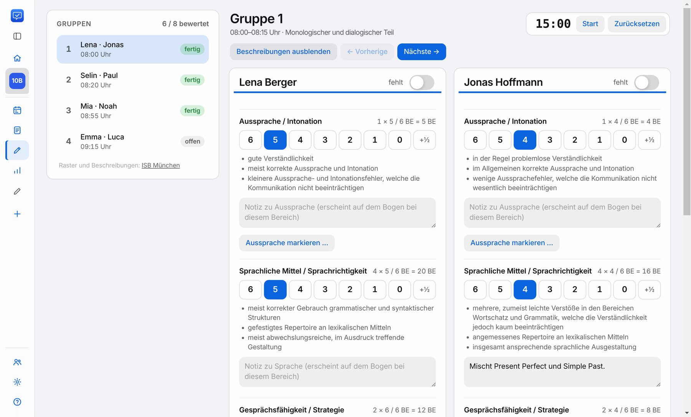
7Ergebnisse, Worturteile & Bögen
Ergebnisse & Bögen zeigt Notenspiegel, Durchschnitt und alle Prüflinge mit Punkten, Note und Worturteil.
- Worturteil öffnet den Text zum Prüfen und Ändern. Er entsteht aus den Punkten (in der dritten Person, in der Sprache des Bogens) und passt immer zur Note. Aus den Punkten neu erzeugen setzt einen geänderten Text zurück.
- „bitte prüfen“: Hast du ein Worturteil von Hand geändert und ändern sich danach Punkte oder Notenschlüssel, markiert Voce es. Vor dem Speichern der Bögen fragt Voce dann nach.
- Alle Bewertungsbögen als Word, direkt daneben die Sprache der Bögen (Standard: Deutsch; Englisch, Italienisch, Französisch oder Spanisch möglich – dann erscheinen Überschriften, Rasterbeschreibungen und das automatische Worturteil in dieser Sprache): eine Datei mit einer Seite pro Person, aufgebaut wie der ISB-Bogen, mit Schullogo und Quellenangabe des ISB. Bogen in einer Zeile erzeugt nur diesen einen.
- Übersicht für die Fachschaft … enthält Notenspiegel, Durchschnitt je Bereich und Notenschlüssel mit Anzahl je Note, wahlweise mit Notenliste.
- Noten kopieren legt „Name + Note“ in die Zwischenablage. Notenliste (CSV für Excel) enthält Punkte, BE und Noten.
- Nachtermin anlegen erscheint, wenn jemand gefehlt hat. Voce legt eine neue Prüfung mit denselben Einstellungen und Aufgaben an, nur für diese Personen.
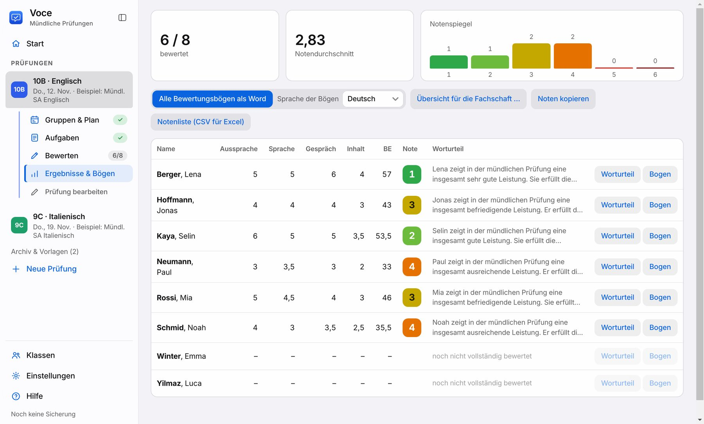
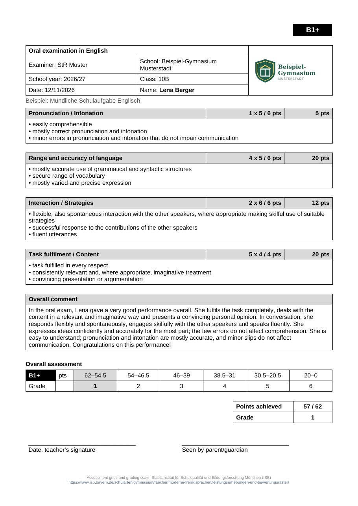
8Drucken und Designs
Prüfungsplan, Türaushang, Prüfungskarten, Prüferblätter und die Übersicht für die Fachschaft öffnen eine Druckvorschau. Links wählst du Design und Optionen, rechts siehst du sofort das Ergebnis. Unten stehen immer Drucken … (öffnet den Druckdialog deines Systems, Drucker und Anzahl wählst du dort) und PDF speichern. Voce merkt sich deine Wahl.
- Prüfungsplan: Fassung für die Prüflinge (ohne Aufgaben, zum Aushängen oder Verteilen) oder für die Lehrkraft (mit Aufgaben je Prüfling und Dialogrollen, deutlich gekennzeichnet).
- Türaushang: Zeiten in großer Schrift, wahlweise ohne Namen.
- Karten: A4 oder A5 (zwei Karten pro A4-Blatt, zum Halbieren), große Schrift, Monolog und Dialog wahlweise auf getrennten Blättern.
- Passt eine Seite nicht ganz, verkleinert Voce sie etwas, statt etwas abzuschneiden. Die Vorschau zeigt das an.
- Als Word (schlicht) liefert eine einfache Fassung zum Weiterbearbeiten.
- Dateinamen: Alle Dateien heißen nach demselben Muster, z. B. 2026-11-12 10B Englisch – Prüfungsplan.pdf oder … – Bewertungsbögen.docx. So stehen im Ordner alle Unterlagen einer Prüfung beieinander und nach Datum sortiert.
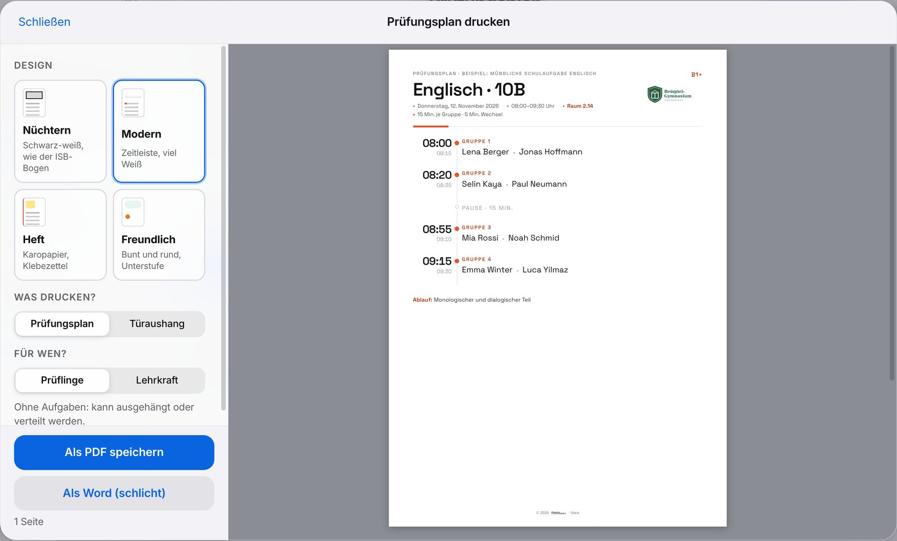
9Einstellungen
Die Einstellungen sind in Bereiche gegliedert; links wählst du den Bereich.
| Bereich | Was du dort einstellst |
|---|---|
| Aussehen | Fünf Farbwelten (Klar, Tageslicht, Laguna, Neon, Heft), Hell/Dunkel/Automatisch, sechs Schriften und die Größe der Oberfläche (z. B. „Groß“ am Beamer). Jeder Knopf zeigt die Schrift selbst. „Tageslicht“ ändert Farben und Helligkeit mit der Tageszeit. Gilt nur auf diesem Gerät, Ausdrucke bleiben gleich. |
| Schule & Bögen | Schule, Prüfer/in, Schuljahr und Schullogo (oben rechts auf Bögen und Plan); ISB-Beschreibungen auf dem Bogen; Unterschriftszeile für Erziehungsberechtigte. |
| Neue Prüfungen | Vorgaben für neue Prüfungen: Fach, Beginn, Gruppengröße, Minuten je Gruppe, Wechselzeit und Pause. Darunter, welches ISB-Raster Voce je Sprachenfolge und Jahrgangsstufe vorschlägt, vorbelegt nach der GER-Übersicht des ISB. |
| Worturteil mit KI | Freiwillig: Worturteile mit Claude, ChatGPT, Gemini oder lokal mit Ollama umformulieren lassen. Für Cloud-Anbieter ist ein API-Schlüssel nötig; ein normales Abo reicht nicht. |
| Sicherung & Updates | Sicherungsstand, zweiter Sicherungsordner, frühere Stände wiederherstellen, Abfrage neuer Versionen, alle Daten als Datei speichern oder einlesen. |
| Hilfe & Info | Diese Anleitung (auch als PDF), Version, Quellen und Lizenzen. |
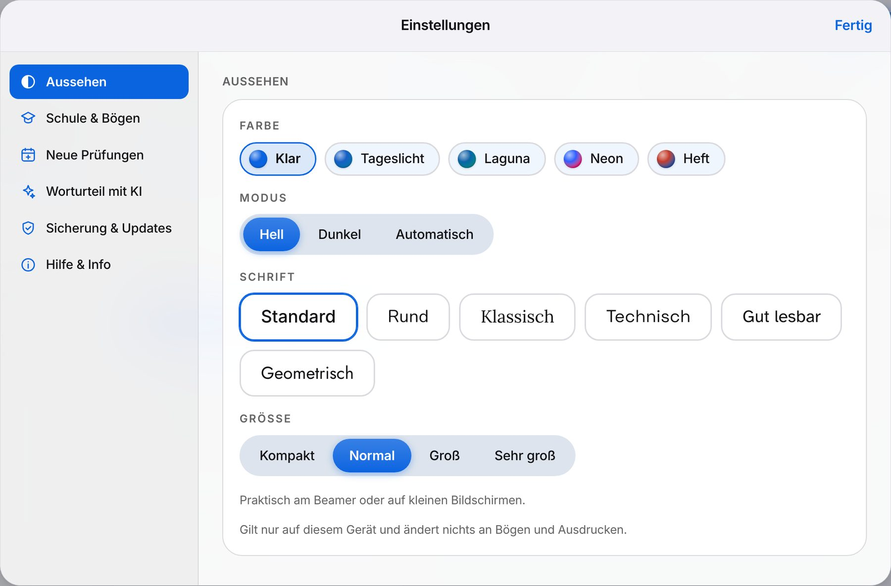
10Sicherung & Datenschutz
- Alle Daten liegen nur auf diesem Mac/PC und werden bei jeder Änderung gespeichert.
- Zusätzlich sichert Voce bei Änderungen etwa alle 15 Minuten und beim Beenden: die letzten 30 Stände und je einen Stand pro Tag.
- Mit Sicherungsordner wählen… legst du einen zweiten Ort fest (z. B. einen Cloud-Ordner oder USB-Stick); dann landet jede Sicherung zusätzlich dort.
- Frühere Sicherungen ansehen und wiederherstellen holt einen älteren Stand zurück. Auch Sicherung einlesen… sichert vorher automatisch den jetzigen Stand.
- Sicherungen im Finder/Explorer zeigen öffnet den Ordner mit allen automatischen Sicherungen.
- Sicherung speichern… (unter „Alle Daten als Datei“) legt eine einzelne Datei an, z. B. für den Umzug auf einen anderen Rechner.
11Raster und Notenschlüssel
Bewertet wird in vier Bereichen mit je 6 BE (Inhalt 4 BE). Je nach Niveaustufe werden die Bereiche unterschiedlich gewichtet:
| Stufe | Aussprache | Sprachliche Mittel | Gespräch | Inhalt | Summe |
|---|---|---|---|---|---|
| A1 / A1+ | 2× | 4× | 1× | 3× | 54 BE |
| A2 / A2+ | 2× | 4× | 2× | 4× | 64 BE |
| B1 / B1+ | 1× | 4× | 2× | 5× | 62 BE |
| B1+/B2 | 1× | 4× | 2× | 6× | 66 BE |
Die Notenschlüssel entsprechen den Rechentabellen des ISB. In der Oberstufe (12/13) zählen sprachliche Leistung 40 %, Gesprächsfähigkeit 20 % und Inhalt 40 %. Wird ein Bereich mit 0 Notenpunkten bewertet, sind insgesamt höchstens 03 Notenpunkte möglich.
Das Worturteil folgt den Beschreibungen des ISB für die gewählte Punktzahl. Seine Gesamteinschätzung entspricht immer der berechneten Note, auch bei einer eigenen Grenze 4/5.
12Checkliste für den Prüfungstag
- Am Vortag einen Bewertungsbogen als Probe speichern: Logo, Schulname und Sprache prüfen.
- Prüfungsplan (Fassung Prüflinge) und Türaushang drucken, Lehrkraft-Fassung und Prüferblätter mitnehmen.
- Karten drucken; bei getrennten Monolog- und Dialogblättern die Reihenfolge beim Austeilen beachten.
- Laptop laden, Voce öffnen: Am Prüfungstag springt „Bewerten“ zur aktuellen Gruppe.
- Während der Prüfung nur Punkte antippen und kurze Notizen schreiben; Worturteile entstehen automatisch.
- Danach Worturteile kurz durchsehen, Bögen speichern und eine Sicherung anlegen.
13Tastenkürzel
| Aktion | Mac | Windows |
|---|---|---|
| Neue Prüfung | ⌘ N | Strg N |
| Klassen | ⌘ K | Strg K |
| Einstellungen | ⌘ , | Strg , |
| Anleitung | ⌘ ? | F1 |
| Alle Daten als Datei sichern | ⌘ ⇧ S | Strg Umschalt S |
| Größer / kleiner | ⌘ + / ⌘ − | Strg + / Strg − |
| Vorherige / nächste Gruppe (Bewerten) | ← → | ← → |
| Dialog schließen | Esc | Esc |